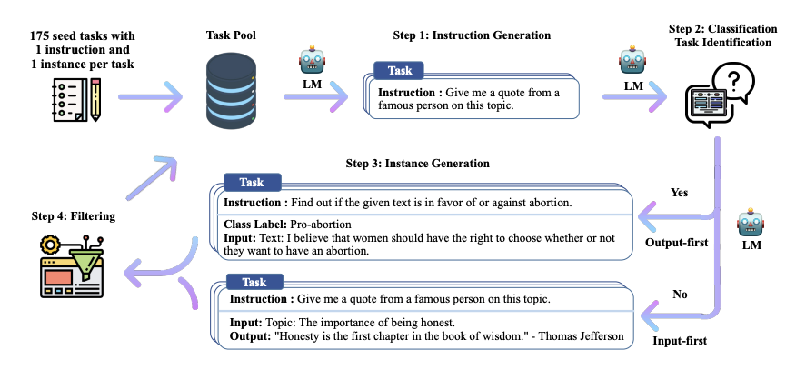

Lecture 15 & 16: Mid-Training(SFT) & Post-Training(PPO, DPO, GRPO)
在前几个Lecture之后，我们以及学习了什么是Pre-Training， 以及如何利用Scaling Law来判断和收集更多的数据，在接下来的几个Lecture中，我们将学习Pre-Training之后的两个重要阶段：Mid-Training和Post-Training。通过这两个步骤和阶段，我们可以从GPT获得ChatGPT。并且在Lecture16中，我们将学习如何改进PPO算法，从RLHF到RLVR，进一步提升模型的性能和能力，废话不多少，让我们开始学习。
1 Why not Just Pre-Training?
Pre-Training的目标，本质上就是预测一下个Token（Next Token Prediction），通过大量的文本数据，训练一个语言模型，让它能够理解和生成自然语言。模型从互联网，数据，代码等语料中学习语言规律和知识，并且通过Scaling Law来判断和收集更多的数据，从而提升模型的性能和能力。但是Pre-Training有一个很显然的问题就是：它只能做成语接龙。也就是说，通过Pre-Training训练出来的模型，它虽然可能具备某项能力，但它不一定知道：
- 用户希望它执行什么任务。
- 应该采用什么样的方式来回答
- 什么时候该调用工具，而不是直接生成文本。
这时候我们就需要继续训练模型，也就是所谓的Post-Training，通过Post-Training，我们可以让模型更好地理解用户的意图，采用合适的方式回答问题，并在必要时调用工具，从而提升模型的实际应用能力。后训练基本可以分成两个阶段：
- Supervised Fine-Tuning（SFT）
- Reinforcement Learning from Human Feedback（RLHF）
{kind=link}
接下来我们来看一下这两个阶段的具体内容和实现方式。
2 Supervised Fine-Tuning（SFT）
我们知道，训练一个模型，避不开的两件事就是：数据和算法，接下来我们就通过这两个方面来看看SFT
SFT的算法本身并不复杂。大多数情况下说，它与Pre-Training的目标函数是一致的，也就是Cross Entropy Loss:
\[ \mathcal{L}_{SFT} = -\sum_{i=\textcolor{red}{k}}^{N} y_i \log(\hat{y}_i) \tag{1}\]
其中\(\textcolor{red}{k}\)表示从第k个Token开始计算Loss，也就是说，前k个Token的Loss不计入总Loss中。为什么要这样做呢？因为在SFT中，我们通常会给模型提供一个Prompt，也就是一个问题或者指令，让模型根据这个Prompt来生成答案。而前k个Token就是Prompt的内容，我们不希望模型在学习如何生成答案时受到Prompt的影响，所以我们只计算从第k个Token开始的Loss。
以上就是SFT的算法。决定SFT效果的关键因素就是数据，接下来我们就来看看SFT的数据是如何构建的，并且看一下这几年训练数据是如何演变的。
2.1 The Evolution of SFT Data
首先我们来看一个简单的SFT训练数据的例子，也就是所谓的Instruct Data：
{
"instruction": "Translate the following English sentence to Chinese.",
"input": "Hello, how are you?",
"output": "你好，你怎么样？"
}这个数据的结构非常简单，包含了三个字段：instruction、input和output。instruction是模型需要执行的任务，input是模型需要处理的输入，output是模型需要生成的输出。通过这样的数据，我们可以让模型学习如何根据instruction和input来生成output，从而让模型获得特定的能力，比如对话、翻译、问答等。接下来我们来看几个具体的数据库的例子。
2.1.1 FLAN
我们先来看一下FLAN (Chung et al. 2022)。 FLAN 是 Google 提出的一套多任务指令微调（Instruction Finetuning）方法。它的核心目标不是向模型灌输某一项特定知识，而是让预训练语言模型学会理解自然语言指令，并将这种能力泛化到训练阶段从未见过的新任务上。
{kind=link}
FLAN可以被理解为一种大规模的多任务（Multi-Task）监督微调，举个例子，假设原始数据集是一个情感分类任务：
FLAN 会通过模版（Template）将其转换为一个指令任务：
Classify the sentiment of the following sentence as positive or negative:
The movie was surprisingly good.
Answer:
Positive这种转化的好处是，对于同一个任务，还可以使用不同的指令模板：
Is the following review positive or negative?
Determine the sentiment expressed in this sentence.
Does the author have a favorable opinion of the movie?这样做可以防止模型只记住某一种固定表达，让它学会理解多种自然语言指令。
不过，FLAN的局限性也很明显：很多训练数据来自传统 NLP 数据集，再通过模板改写成指令，这就让训练的数据显得不够自然
2.1.2 Alpaca
接下来我们来看一下Stanford 开源的Alpaca数据集。 Alpaca包含了约52，000条指令数据，每个数据都由3个字段组成：
我们来看一个具体的例子：
{kind=link}
需要注意的是，与FLAN不同，Alpaca的数据是通过OpenAI的text-davinci-003模型生成的，而不是通过模板改写传统NLP数据集。这也就是所谓的Self-Instruct (Wang et al. 2023)的方法。 :::{#fig-Self-Instruct-Overview.png}

:::2.1.3 OpenAssistant
与 FLAN 和 Alpaca 不同，OpenAssistant(Köpf et al. 2023) 的核心数据并不是由已有 NLP 数据集转换而来，也不是主要由闭源语言模型自动生成，而是由全球志愿者直接编写、评价和排序。Open Assistant的主要目的是：开放社区能否像构建 Wikipedia 一样，通过大规模志愿者协作，构建真正由人类生成和评价的模型对齐数据？
{kind=link}
比较有意思的是，OpenAssistant的数据是以对话树（Conversation Tree）的形式组织的。每个对话树包含一个根节点和多个子节点，每个节点都是一个对话轮次（turn），包括用户的输入和模型的输出。志愿者可以在对话树中添加新的节点，或者对已有的节点进行评价和排序，从而形成一个不断扩展和优化的对话数据集，比如：
用户：请解释什么是梯度下降。
│ ├── 助手回答 A：梯度下降是一种优化算法……
│ │ │ ├── 用户追问：学习率是什么？
│ │ ├── 助手回答 A1：学习率控制每一步更新大小……
│ │ └── 助手回答 A2：可以把学习率理解为下山时的步长……
│ │ │ └── 用户追问：能给一个数学例子吗？
│ │
│ └── 助手回答 B：梯度下降就是不断调整参数……
│ │ └── 用户追问：这个解释太简单，可以详细一点吗？通过这种方式，OpenAssistant能够收集到更自然、更多样化的对话数据，从而提升模型的对话能力和用户体验。
2.1.4 Namotron
前面3个Dataset，都是把较模型如何与人类对话，而我们知道，现在的LLM，不仅需要对话能力，还需要有所谓的Agent能力，也就是可以调用外部工具。NVIDIA 发布的 Nemotron-SFT-OpenCode-v1，正是面向这类 Agentic Coding 场景构建的监督微调数据集。
通过这种方式，可以显示的教模型Agentic的能力。
2.1.5 Compare those SFT Datasets
通过以上几个例子，我们可以看到SFT数据的演变过程：从回答一个问题，发展成维持一个对话，最后发展为在环境中执行一个任务。同时我们也看到，不同的SFT训练数据之间，有很大的差异：
- 训练数据的长度不同
- 回答问题的模式不同
- 数据的来源不同
- 数据的生成方式不同（人工编写 vs 模板改写 vs 模型生成）
- 数据的结构不同（单轮问答 vs 多轮对话 vs 环境交互）
{kind=link}
从这篇报道中(Dubois et al. 2024)，我们可以看到，不管是人类还是LLM Judger，都会偏向于选择更长的回答，或者更详细的回答，这也就是所谓的Style Matters。也就是说，SFT数据的质量和风格，对模型的性能和能力有很大的影响。
但是尽管提升了这种Judge的分数，但在实际的Benchmark中，模型的性能和能力并没有明显的提升，这也就是所谓的SFT的局限性。
如果只关注用户点击、点赞或模型评审分数，很容易把风格优化误认为能力进步。
接下来我们再来了解一下SFT训练的局限性
2.2 Why High quality SFT Data can harm model?
接下来我们来了解一下反直觉的现象，当有些高质量的SFT数据，反而会降低模型的性能和能力。我们来看一个例子：假设训练数据中包含这样的回答：根据 Smith et al. (2019) 的研究……
模型在学习这条样本时，实际上同时学习了两件事：
- 某个具体事实或引用；
- 回答问题时应该给出学术引用。
如果模型真正掌握了相关知识，这没有问题。
但如果这条引用属于模型不熟悉的长尾知识，模型可能只学会了“回答时应该附带引用”的形式，却没有可靠地掌握引用内容。
之后面对另一个问题时，它就可能生成一个看起来合理、实际上不存在的论文或作者。这就是所谓的“幻觉”现象（hallucination），也就是模型生成了一个看似合理但实际上不存在的答案。
2.3 Safety in SFT
除了提升模型的能力和性能之外，SFT还可以用来提升模型的安全性。安全调优通常需要同时降低两个指标：
- Violation Rate：模型错误地执行了危险或违反政策的请求。
- False Refusal Rate：模型错误地拒绝了安全或合理的请求。
实验证明，仅仅通过一些安全相关的SFT数据，模型就可以显著降低Violation Rate，同时保持False Refusal Rate不变。这说明，SFT不仅可以提升模型的能力和性能，还可以提升模型的安全性。
2.4 How to train SFT model?
有了数据，模型，接下来我们就可以训练SFT模型了。训练SFT模型的过程其实和Pre-Training模型的过程是类似的，都是通过梯度下降来优化模型的参数，只不过SFT模型的训练数据是经过精心设计和筛选的，目标是让模型学会如何根据指令和输入生成合适的输出。不过既然以及有了Pre-Training的架构，并且SFT的训练目标和Pre-Training的目标是一致的，那么我们就可以直接在Pre-Training模型的基础上进行SFT训练，这样可以节省大量的计算资源和时间。这就是所谓的Mid-Trainign/Two-phase Training:
- Phase 1: Pre-Training
- Phase 2: SFT
通过改变训练时的数据分布，我们可以让模型从学习语言规律和知识，转变为学习如何根据指令和输入生成合适的输出，从而提升模型的实际应用能力。
{kind=link}
MiniCPM (Hu et al. 2024)
2.5 Summary of SFT
3 RLHF
3.1 PPO
3.2 DPO
4 RLVR
4.1 GRPO
4.2 Dr.GRPO
5 Case study
6 Summary
7 In the end
创作不易，如果你觉得内容对你有帮助，欢迎请我 喝杯咖啡/支付宝红包，支持我继续创作！你们的支持是我最大的动力！ :)